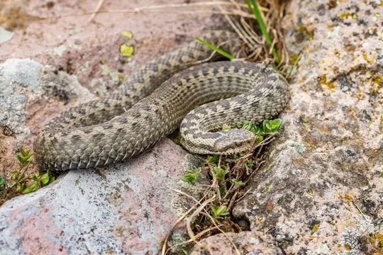

Vipera
The genus Vipera (family Viperidae) has 24 living species in SnakeList (all venomous), recorded in 50 countries (+1 territory); 10 fossil species are listed separately.
- 24living species
- 24venomous
- 50countries
- 10fossil
About the genus
A genus of the family Viperidae (vipers and pit vipers).
What the name means: Vipera – probably from the Latin vivus (alive) and pario (to give birth) - because most vipers bear live young.[1]
Species
Showing 24 species
 AdderVipera nikolskii
AdderVipera nikolskii Alburzi ViperVipera eriwanensis
Alburzi ViperVipera eriwanensis Altai ViperVipera altaica
Altai ViperVipera altaica Anatolian Meadow ViperVipera anatolica
Anatolian Meadow ViperVipera anatolica Asp ViperVipera aspis
Asp ViperVipera aspis Caucasus ViperVipera kaznakovi
Caucasus ViperVipera kaznakovi
Darevsky's ViperVipera darevskii Dinnik's ViperVipera dinniki
Dinnik's ViperVipera dinniki European AdderVipera berus
European AdderVipera berus Greek Meadow ViperVipera graeca
Greek Meadow ViperVipera graeca- No photo yetIranian Mountain Steppe ViperVipera ebneri
 Lataste's ViperVipera latastei
Lataste's ViperVipera latastei Lotiev's ViperVipera lotievi
Lotiev's ViperVipera lotievi Meadow ViperVipera ursinii
Meadow ViperVipera ursinii Mountain Viper (monticola)Vipera monticola
Mountain Viper (monticola)Vipera monticola Nose-horned ViperVipera ammodytes
Nose-horned ViperVipera ammodytes Orlov's ViperVipera orlovi
Orlov's ViperVipera orlovi Sako's ViperVipera sakoi
Sako's ViperVipera sakoi Seoane's ViperVipera seoanei
Seoane's ViperVipera seoanei Steppe ViperVipera renardi
Steppe ViperVipera renardi Transcaucasian Long-nosed ViperVipera transcaucasiana
Transcaucasian Long-nosed ViperVipera transcaucasiana Turkish ViperVipera barani
Turkish ViperVipera barani- No photo yetVipera illyrica
 Vipera walser
Vipera walser
No snakes in Vipera match.
Fossil species
These species are known only from fossils. They are not living species and are not counted in this page’s totals. The geological ages given are approximate: they come from the rock layers the fossils were found in, and the dating and classification of fossil snakes are revised as new material is studied.
- Vipera antiqua (early Miocene, about 17 million years ago)
- Vipera gedulyi (late Miocene, about 6 million years ago)
- Vipera maghrebiana (middle Miocene, about 13 million years ago)
- Vipera maxima (early Pliocene, about 4 million years ago)
- Vipera meotica (late Miocene, about 7 million years ago)
- Vipera natiensis (early-middle Pliocene, about 4 million years ago)
- Vipera platyspondyla (fossil; age not recorded in SnakeList)
- Vipera sarmatica (fossil; age not recorded in SnakeList)
- Vipera ukrainica (late Miocene, about 11 million years ago)
- Vipera weigeli (fossil; age not recorded in SnakeList)
About the genus Vipera
- Distribution: living species recorded in 50 countries (+1 territory), on 3 continents: Africa, Asia, Europe.
- Family: Viperidae.
- Countries and territories: Albania, Algeria, Andorra, Armenia, Austria, Azerbaijan, Belarus, Bosnia and Herzegovina, Bulgaria, China, Croatia, Denmark, Estonia, Finland, France, Georgia, Germany, Greece, Hungary, Iran, Israel, Italy, Kazakhstan, Kosovo, Kyrgyzstan, Latvia, Liechtenstein, Lithuania, Moldova, Mongolia, Montenegro, Morocco, Netherlands, North Macedonia, Norway, Poland, Portugal, Romania, Russia, San Marino and 11 more.
Compare its species
Its living species side by side. Lengths come only from SnakeList’s reviewed, sourced accounts; the others are left blank rather than guessed.
| Species | Venom | Recorded in | Adult length (reviewed accounts) |
|---|---|---|---|
| Adder Vipera nikolskii | Venomous | 4 countries (Europe) | No reviewed account yet |
| Alburzi Viper Vipera eriwanensis | Venomous | 5 countries (Asia) | No reviewed account yet |
| Altai Viper Vipera altaica | Venomous | 1 country (Asia) | No reviewed account yet |
| Anatolian Meadow Viper Vipera anatolica | Venomous | 1 country (Asia) | No reviewed account yet |
| Asp Viper Vipera aspis | Venomous | 7 countries (Europe) | No reviewed account yet |
| Caucasus Viper Vipera kaznakovi | Venomous | 3 countries (Asia, Europe) | No reviewed account yet |
| Darevsky's Viper Vipera darevskii | Venomous | 2 countries (Asia) | No reviewed account yet |
| Dinnik's Viper Vipera dinniki | Venomous | 7 countries (Asia, Europe) | No reviewed account yet |
| European Adder Vipera berus | Venomous | 19 countries (Europe) | Small: up to about 55 cm |
| Greek Meadow Viper Vipera graeca | Venomous | 2 countries (Europe) | No reviewed account yet |
| Iranian Mountain Steppe Viper Vipera ebneri | Venomous | 1 country (Asia) | No reviewed account yet |
| Lataste's Viper Vipera latastei | Venomous | 5 countries (Africa, Europe) | Usually under 60 cm; up to about 72 cm |
| Lotiev's Viper Vipera lotievi | Venomous | 2 countries (Asia, Europe) | No reviewed account yet |
| Meadow Viper Vipera ursinii | Venomous | 14 countries (Europe) | No reviewed account yet |
| Mountain Viper (monticola) Vipera monticola | Venomous | 2 countries (Africa) | No reviewed account yet |
| Nose-horned Viper Vipera ammodytes | Venomous | 15 countries (+1 territory) (Asia, Europe) | No reviewed account yet |
| Orlov's Viper Vipera orlovi | Venomous | 1 country (Asia) | No reviewed account yet |
| Sako's Viper Vipera sakoi | Venomous | 1 country (Asia) | No reviewed account yet |
| Seoane's Viper Vipera seoanei | Venomous | 3 countries (Europe) | No reviewed account yet |
| Steppe Viper Vipera renardi | Venomous | 8 countries (Asia, Europe) | No reviewed account yet |
| Transcaucasian Long-nosed Viper Vipera transcaucasiana | Venomous | 3 countries (Asia) | No reviewed account yet |
| Turkish Viper Vipera barani | Venomous | 1 country (Asia) | No reviewed account yet |
| Vipera illyrica | Venomous | 9 countries (Europe) | No reviewed account yet |
| Vipera walser | Venomous | 1 country (Asia) | No reviewed account yet |